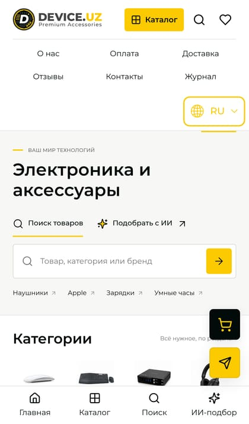
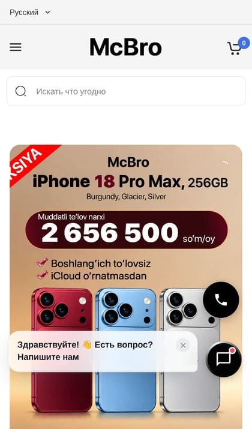

что видит покупатель и поисковик, и как это исправить
Открыли сайт как покупатель, с телефона и компьютера: главная, каталог, карточки, узбекская версия. Посмотрели выдачу Google и карту сайта для поисковиков, сравнили с соседями, которые продают те же Marshall, DJI и JBL.
| Сайт | Первый экран | Вся страница | Вес кода | Google: наушники Marshall | Google: DJI Mic |
|---|---|---|---|---|---|
| deviceuz.uz | 4,7 с | 11,3 с | 484 КБ | нет в десятке | 4-е место |
| mcbro.uz | 2,2 с | 6,8 с | 57 КБ | 1-е место | 2-е место |
| 220volt.uz | 5,2 с | 7,8 с | 55 КБ | 5-е место | нет в десятке |
| maxcom.uz | 4,2 с | 10,5 с | 28 КБ | 6-е место | нет в десятке |
Запросы: «купить наушники Marshall Ташкент» и «DJI Mic купить в Ташкенте», выдача по Ташкенту. Первый экран и вся страница: секунды на телефоне. Вес кода: без фото товаров; чем меньше, тем быстрее сайт на мобильном интернете. Замер 4 ноября 2026 года, iPhone, один сервер для всех, не из Узбекистана: из Ташкента цифры меньше, соотношение то же. В десятке Google ещё Mediapark, Uzum и OLX. Яндекс отвечает нашим серверам проверкой «вы не робот», места в Яндексе посмотрим вместе с вами из Ташкента.


Рассрочка без переплат у вас есть, но о ней одна строка внизу главной. Человек с телефона решает за пару секунд, листать дальше или вернуться в поиск.
Исправим: меню в одну строку, на первый экран хиты с ценой и «рассрочка без переплат».
Почти половина веса приходится на значок Инстаграма в подвале. Картинка размером 60 на 60 точек весит 240 КБ, больше любого фото товара, и стоит на каждой странице дважды. Поэтому первый экран на телефоне появляется через 4,7 секунды, у McBro через 2,2. По данным Google, больше половины посетителей с телефона уходят, если страница грузится дольше 3 секунд.
Исправим: значок станет обычным файлом в 2 КБ. Страница вдвое легче, без перемен во внешнем виде.
На сайте запрещено увеличение. Покупатель хочет рассмотреть разъём или цвет наушников, раздвигает пальцами, и ничего не происходит. Мелкие характеристики на телефоне не прочитать.
Исправим: одна строка в настройках страницы.
DJI Mic 3: Google показывает «Цена 3 289 300 сум», на странице 3 597 000. Описание для поиска написано руками и не обновилось вместе с ценой. Человек приходит за одной ценой, видит на 300 тысяч выше и думает, что его обманули. Кроме того, для поисковиков у всех товаров стоит «в наличии», даже если товар закончился.
Исправим: цена и наличие в описании для поиска будут браться из карточки сами.
На странице «Отзывы» тексты как из образца: «Василий Милославский» (герой фильма «Иван Васильевич меняет профессию»), «благодарю вас за качественно выполненную работу», ни слова о товаре или доставке. Внимательный покупатель это замечает. А 268 настоящих отзывов с оценкой 5,0 на Яндекс Картах остаются на картах.
Исправим: покажем на сайте настоящие отзывы и оценку с Яндекс Карт и 2ГИС.
В карте для поисковиков 2 102 адреса: 700 товаров, 16 категорий и 1 336 тегов вроде «кулер для телефона», где описание из тех же трёх слов. Тег «SanDisk Extreme PRO Portable SSD» спорит в поиске с карточкой этого же товара, у Marshall Monitor III два обзора, и они отбирают места друг у друга.
Исправим: лишние теги уберём из поиска, нужные сделаем подборками с текстом; одна модель, одна страница.
В узбекской карте сайта 66 адресов против 2 102 русских: остальное закрыто от поиска, пока не переведено. Кто ищет «quloqchin Marshall», вас не найдёт. Цена там подписана кириллицей, «сўм».
Исправим: переведём категории и карточки, вычитаем, откроем поиску; «so‘m» латиницей.
Корзина, карточка товара, поиск и шрифты загружаются с deviceuz.duckdns.org, бесплатного адреса стороннего сервиса. Перестанет он отвечать, и корзина на сайте не работает. Достанется адрес чужому, и он сможет подменить корзину.
Исправим: перенесём эти файлы на сам deviceuz.uz.
Ещё по мелочи: у 55 из 96 картинок главной нет подписи, и Google Картинки не приводят покупателей; при пересылке ссылки на главную в Telegram нет картинки; главный адрес страницы сайт сообщает только после загрузки, и Яндекс может его не увидеть.
Три самые дорогие ошибки: тяжёлый значок (страница вдвое легче), увеличение пальцами, цена в Google из карточки.
Теги и дубли, узбекская версия, корзина на свой адрес, настоящие отзывы, мелочи. Сумму назовём, когда посмотрим вашу панель.
Вместо шаблона платформы: товар и рассрочка на первом экране, загрузка до 2 секунд, все 700 товаров и адреса страниц переносим. До решения за 12 часов бесплатно соберём макет главной: откроете с телефона и посмотрите вживую.